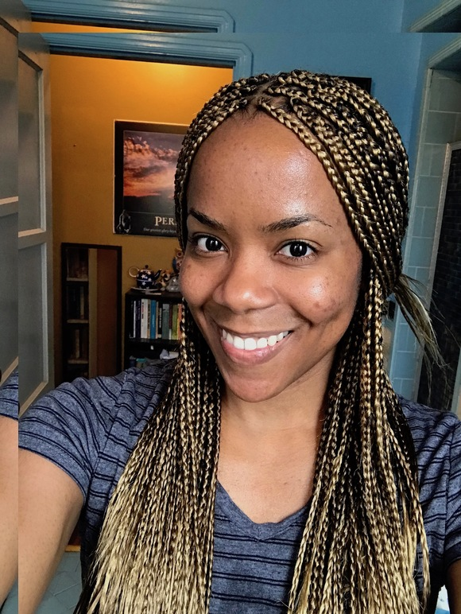

About Me
Hello World, welcome to my portfolio site! My name is Dominica Patterson and I am a full stack web developer residing in Los Angeles California. I am passionate about creating, life-long learning, and entrepreneurship. Some of my favorite hobbies are international travel, visitng museums and galleries, architectural and historical tours, practicing Spanish, and running.
Before I became a developer I studied a wide range of fields including Anthropology, Spanish, Earth Science, and Higher Education Administration. My diverse background has equipped me well in business, critical thinking, and communication. My mission is to help individuals, teams, and organizations succeed in their businesses by providing customized web solutions.
A few fun facts:
- I have lived and studied in the UK twice
- My favorite city is London
- I found trilobite fossils in both Southern California and Germany
- I love muscle and classic cars
- My favorite music is from the 60's up until the 90's
- I was a pretty strong sprinter back in the day